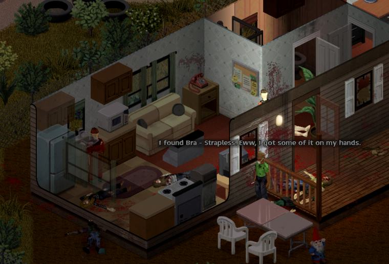

Field Manual
A Complete Guide to Living with the Fellows of Knox County
· · · ✚ · · ·
Living Fellows — Project Zomboid Build 42.21.0 Edition
Release 0.26.28 — First Edition, Fourth Printing — You won't die... alone.
A Complete Guide to Living with the Fellows of Knox County
· · · ✚ · · ·
Living Fellows — Project Zomboid Build 42.21.0 Edition
Release 0.26.28 — First Edition, Fourth Printing — You won't die... alone.

Part I
Nobody hands you a manual when the world ends. Here is one anyway: how to install the fellows, find the first of them, and tell them what you need.
Install.bat Chapter 1: Before You BeginDay One ↑ Contents
Chapter 1: Before You BeginDay One ↑ ContentsLiving Fellows turns the survivors you meet into persistent people. They are native human actors with real inventories, injuries, skills and permanent death, and they make their own survival decisions when you are not giving orders. That depth needs a small native bridge beside the usual Lua, which is why installing it takes one step more than an ordinary mod.
The mod targets Project Zomboid Build 42.21.0 and is single-player only. Multiplayer and user-added split-screen players are refused. The one exception is the experimental expedition, which may briefly put its own companion leader in a second local view to load the mission area.
| Method | What you need | Best for |
|---|---|---|
| Steam Workshop | Project Zomboid 42.21.0 and ZombieBuddy 2.3.3 or newer, including its one-time loader setup | Automatic Living Fellows updates once ZombieBuddy is installed |
Install.bat | Windows and Project Zomboid 42.21.0 | Everyone else: no ZombieBuddy, no Workshop account needed |
SurvivorCompanion, and two copies fight over which one loads. If you switch methods, remove the old copy first.Install.batSTANDALONE-WINDOWS ZIP from the project's Releases page.ZombieBuddy loads approved Java mods outside the game's Lua sandbox. Review its installation preview, and approve Living Fellows only if you trust the repository and the Workshop item.
The standalone installer finds Steam on its own. If Windows refuses access to the game folder, run it as Administrator. For a game in another Steam library, point it there:
.\Install.bat -GameRoot "D:\SteamLibrary\steamapps\common\ProjectZomboid"
It installs the mod under %USERPROFILE%\Zomboid\mods\SurvivorCompanion, keeps its bridge under %LOCALAPPDATA%\LivingFellows, and backs up ProjectZomboid64.json before changing it. It never edits projectzomboid.jar. Uninstall.bat, run from the same folder, removes everything and restores the original launcher settings.
Companions, households, relationships, contracts, bases and production orders are saved with the world, so they outlive your character. That also means the mod is woven into the save. Before installing or updating:
%USERPROFILE%\Zomboid\Saves somewhere safe. Chapter 2: The First Five MinutesDay One ↑ Contents
Chapter 2: The First Five MinutesDay One ↑ ContentsKnox County was never crowded, and it is less crowded now. The people who are left keep to themselves. None of them falls in behind you because you happened to walk past; every one of them has to be asked.

| Setting | Starts as | Where to change it |
|---|---|---|
| Main order | Follow | Orders |
| Movement | Copy player: walks, sneaks and runs when you do | Orders |
| Ride with player | On: takes a free passenger seat in your vehicle | Orders |
| Scavenge when safe | On: searches nearby containers when things are quiet | Orders |
| Rules of engagement | The team doctrine you have set; later recruits inherit it | Orders |
Each survivor arrives with a profession, a trait, a personality, a history, a keepsake, a preferred camp role and a personal goal. You can read most of it in . A team holds up to 16 companions by default; the sandbox page sets the limit (Appendix B).
 Chapter 3: The Companion PanelDay One ↑ Contents
Chapter 3: The Companion PanelDay One ↑ ContentsThe panel is translucent so the world stays visible behind it. Dock it left or right, collapse it to the LF launcher, or toggle it with Home. The key can be rebound under Living Fellows in the game's key bindings, and the background opacity is a sandbox option.
| Tab | What lives there |
|---|---|
| Status | Health and needs, current action, order, distance, and a relationship summary |
| Orders | Direct orders, movement and follow distance, combat doctrine, scavenging |
| Squad | Group assignment, group orders, movement and fire signals |
| Expeditions | The experimental squad mission planner and active mission status |
| Loadout | Wounds and treatment, inventory, weapon and carry policy, vehicle status |
| More | Base (camp operations), Factions (households, trade, standing), Journal (history, relationships, memories, goals) and Support (runtime health) |
Use the button above the tabs, or right-click a nearby companion and choose . Pick a topic and a line, and the companion walks into speaking distance before it answers. The talk view keeps recent dialogue and says so when something interrupts. Every line you can choose, and what it does, is in Chapter 9b. The same right-click menu offers Follow, Stay, Regroup and Retreat, and a link to the full Orders panel.
Select a companion in the roster and hold Keypad 1 to ease the camera toward them; let go to ease home. Keypad 2 starts or stops a Watch view that stays on them. With the mouse, right-click a nearby companion and choose ; while watching, right-click anywhere and choose . Both work with the panel collapsed, on the same floor within 16 tiles, and alongside the game's right-click aim lean. All three keypad keys can be rebound under Options, Key bindings, Living Fellows.
Hold Keypad 3 (separately rebindable) and point at loaded ground to walk the selected companion toward the cursor. Hold Peek and Steer together for a scout-and-direct view. Steering goes through the same action supervisor as work and survival: it can interrupt lower-priority activity, can't pull a companion out of a protected native action, and gives way at once to a combat rescue or survival movement. Let go of the key and the companion's own judgement resumes.
Chapter 3b: Status and LoadoutDay One ↑ ContentsTwo tabs answer most questions about one companion: says what they are doing and how they are, and says what they carry and what hurts.
| Block | Lines |
|---|---|
| Status | Name, health, hunger and thirst; the current action and the last action problem, if something just failed; order, intent and distance from you |
| At a glance | Mood and relationship tier; their current need; a recent memory; grief, if they are mourning; any promise they're expecting you to keep; and any stress response they're going through right now |
Now and then a bored companion asks for something at the top of Status, most often "We should plan another supply run." (Chapter 9f). Four answers are offered: We will go soon, Come with me now, Not now and We cannot spare the risk.
| Section | What's there |
|---|---|
| Gear | Equipped weapon and weapon preference; supplies (bandages or rags, food, water); rounds of ammunition; carry load, and whether overload is allowed |
| Weapon priority | Best available, prefer melee, prefer firearms, or quiet weapons |
| Carry policy | Allow or prevent overload |
| Vehicle | On foot, approaching a vehicle, in a vehicle, or waiting for a safe exit, with their assigned seat (Chapter 5c) |
| Health | Every wound by body part: scratched, cut, deep wound, burned, fractured, bitten, bleeding, infected, bandaged or a dirty bandage |
| Health actions | Open their health panel, bandage them yourself, or open their inventory |
| Wound state | What to do | |
|---|---|---|
| Bleeding | Bandage now; it comes first | |
| Fractured | A splint, once the bleeding is dressed | |
 | Dirty bandage | Change it; they will in downtime if they carry a clean one |
| Bitten | See Chapter 8 |
 Chapter 4: Giving OrdersDay One ↑ Contents
Chapter 4: Giving OrdersDay One ↑ ContentsAn order tells a companion what you want, not how to move every limb. Between orders, they look after themselves: they eat, rest, read, repair, scavenge and keep watch, and they fight or flee when they must. A good order sets the frame and lets them fill it in.
| Order | What it means |
|---|---|
| Follow | Keep formation behind you at the chosen follow distance. When you stop, followers hold formation for a few seconds before they start downtime or scavenging nearby. |
| Stay | Hold this place. Inside your camp area, Stay puts the companion on base duty instead. |
| Guard | Patrol around an anchor. Inside the camp, Guard makes them a base guard watching the square you picked. |
| Regroup | Emergency: come back to me now. |
| Retreat | Emergency: break contact and fall back. |
Right-click the world for the menu. The selected companion gets plus one action for whatever you clicked: open or close a door, barricade, remove a barricade, dismantle, or for an indoor room. Target actions, care, squad signals, base work and households sit in submenus.
Right-click a recruited companion and choose to set a concrete priority: medical supplies, reading material, gear, shelter, or a proper meal. Their own personal goal is kept and comes back once your objective is met (Chapter 9d).
| Setting | Choices | Notes |
|---|---|---|
| Follow distance | Stay close, 2, 3, 5 or 8 tiles | Formation slots, not a single queue |
| Movement | Copy player, Walk, Sneak, Run | Escapes and combat can override it |
| Scavenging | On or off | On for new recruits |
| Weapon priority | Best available, Melee, Firearms, Quiet weapons | What they reach for first |
| Rules of engagement | Stealth, Close Defense, Ranged Support, Weapons Free | One companion or the whole team; see Chapter 6 |
| Hold fire | On or off | Blocks ordinary shots whatever the doctrine allows |
| Ride with player | On or off | Takes free passenger seats and gets out with you; extra followers wait safely on foot |
| Allow overload | On or off | Carry past the normal limit, up to a cap |
Dismissal asks for confirmation by name, from the Squad view or the context menu, so a changed roster selection can't send the wrong person away. Confirm, and the companion leaves the group and walks away from you. Their base duty and work end with it.
A dismissal is a player order, and it outranks routine life. A companion pausing between actions, eating, reading or busy with a camp job stops and goes. Two things still come first. A companion fighting or escaping for its life keeps its claim, and so does one partway through an action that can't safely be stopped, such as the game's own timed actions or work that is committing its result. The dismissal is refused until that is over; try again a moment later.
 Your First Week at a Glance ↑ Contents
Your First Week at a Glance ↑ ContentsThere is no right order to any of this, but a first week with the fellows tends to run like this:
| When | Do this | Read |
|---|---|---|
| Day 1 | Recruit one survivor; set the team doctrine; let them scavenge while you loot | Ch 2, Ch 6 |
| Day 1–2 | Keep clean water and food where they can reach it; let them bandage you | Ch 8 |
| Day 2–3 | Set a camp core; mark food, water, medical and tool storage | Ch 11 |
| Day 3–4 | Give one companion a base job; plan a wall or barricade | Ch 13, Ch 14 |
| Day 4+ | Watch for households, and for bandit camps, which appear from day four | Ch 18 |
| When ready | On a disposable save, try sending a squad on an expedition | Ch 17 |

Part II
The county is the same county, only quieter and hungrier. These chapters cover how the fellows walk it with you: how they move, fight, forage, heal, talk, and remember.
 Chapter 5: Moving TogetherSettling In ↑ Contents
Chapter 5: Moving TogetherSettling In ↑ ContentsFollowers keep their place instead of stacking on your heels. By default a team you lead walks in single file along your path. Turn on (Orders, Combat; it applies to the whole team) and on clear open ground they spread into fireteam slots instead: a close fighter at point, firearm support in the middle, and a cautious survivor at the rear. Doors, windows, fences, stairs and narrow streets put them back in file, one at a time, and they spread out again on the other side. An expedition squad always uses the fireteam shape.
| Fireteam role | Where they stand | Who fits it |
|---|---|---|
| Point | Front rank | A close fighter |
| Assault | Front rank beside point, then out on the flanks | The other close fighters |
| Ranged support | The rank behind, alternating sides | Anyone who can shoot |
| Rear guard | Behind the group | A cautious survivor who watches the way you came |
On the move they check blind corners, climb fences and walls with the player's own actions, route around vehicles, furniture and crowds, and remember the way back outside. When danger closes in they back off or strafe on safe ground, and they turn and run when they are overrun.
In clear conditions a companion spots zombies up to 24 tiles away, but each one has to see the target for itself. Walls, closed doors and other floors block sight. Noise behind a wall produces only an uncertain warning, never a confident callout.
Stairs are the hardest ground a companion walks. If a follower can't cross floors by the direct path, it surveys the loaded stairs nearby, walks to a verified entrance and climbs from there. A staircase it can't reach, behind a wall or a locked door, is dropped after twenty seconds of trying without getting closer, and the next loaded staircase is tried. Time spent fighting or holding position doesn't count against those twenty seconds.
With Ride with player on, companions take free passenger seats and get out when you do. When the car is full, the extra followers wait safely on foot. No one leaves a moving vehicle: getting out waits until it has stopped. Seats, statuses and shooting from a car are in Chapter 5c.
 Chapter 5b: Squads and SignalsSettling In ↑ Contents
Chapter 5b: Squads and SignalsSettling In ↑ ContentsOne companion follows your voice. Six need a system. The tab splits the team into groups, gives each group its orders, and lets you steer everyone at once with a whistle or a hand sign.
Select a companion and choose a Group: None, Alpha, Bravo or Charlie. The same tab shows the companion's place in the fireteam, for example CQB role: Point — column 1 of 4 (Chapter 5). A group is also the squad you send on an expedition.
The Group orders apply to everyone in the selected companion's group:
| Group order | Same as |
|---|---|
| Group: follow me | Follow, for the whole group |
| Group: stay here | Stay |
| Group: guard this area | Guard |
| Group: regroup | Regroup (emergency) |
| Group: retreat | Retreat (emergency) |
Signals are given by your character, in the world: you whistle or make the gesture, and companions answer. The difference is who hears it. The whistle reaches every companion on Follow, seen or not, but it is loud: it carries about 24 tiles, and zombies hear it too. A hand sign is silent, but only companions who can see you respond. Each one that obeys answers with an OK sign of its own.
| Signal | What they do | |
|---|---|---|
| Whistle: regroup followers | Regroup |
| Hand sign: follow | Follow | |
| Hand sign: hold | Stay | |
| Hand sign: regroup | Regroup | |
| Hand sign: follow cautiously | Follow, with movement set to Sneak and scavenging switched on | |
| Hand sign: move out | Follow | |
| Hand sign: fall back to me | Retreat | |
| Hand sign: cease fire | Hold fire on | |
| Hand sign: fire | Hold fire off |
The Squad tab lists every signal under Squad movement signals and Squad fire signals. The quickest ones (whistle, hold, fall back, cease fire and fire) are also in the world right-click menu under .
Orders offers five follow distances: Stay close, 2, 3, 5 or 8 tiles. Close spacing suits buildings and doorways; wide spacing suits open roads, where a long column is less likely to bunch up behind you at a fence.
 Chapter 5c: Riding TogetherSettling In ↑ Contents
Chapter 5c: Riding TogetherSettling In ↑ ContentsWith Ride with the player when a seat is available switched on (it is, for every new recruit), followers climb into your vehicle when you drive off and get out when you do. Seats are planned, not scrambled for: each rider is assigned a free passenger seat, and the plan is rebuilt if someone else takes a seat first.
| Vehicle status | Meaning |
|---|---|
| On foot | Not riding |
| Approaching vehicle | Walking to an assigned seat. Loadout shows which seat, how many of the passenger seats are assigned, and how many companions are waiting. |
| In vehicle | Seated |
| Waiting for safe exit | Wants out, but the vehicle is still moving |
Nobody steps out of a moving vehicle. A companion who needs out waits until it stops; then appears on Loadout and in the companion's right-click menu if you want them out before you.
| Doctrine | From a passenger seat |
|---|---|
| Stealth | Never shoots |
| Close Defense | Doesn't shoot |
| Ranged Support | May fire through an open or broken window, at a safe speed |
| Weapons Free | Engages, but vehicle safety checks still apply |
Expedition squads always travel on foot.
 Chapter 6: Combat and the Rules of EngagementSettling In ↑ Contents
Chapter 6: Combat and the Rules of EngagementSettling In ↑ ContentsCompanions fight with the game's own attack animations and weapon timings. Before every swing or shot they weigh their wounds, stamina, panic, pain, morale, skill and weapon condition against the support around them and the routes out. They split targets, avoid friendly fire, shove when it is safe, finish zombies on the ground, and cover a retreat.

The Rules of Engagement are set on , for one companion or the whole team. A team doctrine applies to every recruited companion, including recruits who join later. Friendly-fire and survival checks stay active under all four.
| Doctrine | What it asks of them | From a vehicle |
|---|---|---|
| Stealth | Avoid contact. Defend only against an active attack, using quiet force whenever possible. Warnings become silent hand signals when they can. | Never shoots |
| Close Defense | Remove threats close to the team without chasing distant zombies. Use the best available weapon. | Doesn't shoot |
| Ranged Support | Prefer firearms, keep distance, conserve fire, and support the team. | May fire through an open or broken window at a safe speed |
| Weapons Free | Engage visible nearby threats with the best weapon, and pursue briefly. | Vehicle safety checks still apply |
A companion who decides a fight is too dangerous says why. It names the reason that actually decided it, such as exhaustion, encirclement, wounds, bad footing, no escape, or an empty weapon, instead of refusing in silence or shouting a generic retreat.
| The reason that decided it | What you'll hear |
|---|---|
| Out of stamina | "I've got nothing left. Not yet." |
| Badly hurt | "I'm in no state for this." |
| Rattled inside | "I'm not steady enough for this. Not right now." |
| No weapon | "I've got nothing to fight with. I'm not going in." |
| Weapon about to break | "My axe is about done. You want this?" |
| Out of ammunition | "I'm dry. Give me a second." |
| Too many close by | "That's three of them. I'm not going in there." |
| Crowded at arm's length | "More close than I can handle. I'm backing off." |
| Pressure from one side | "Too much coming from that side. I'm pulling back." |
| Threats from several sides | "They're coming from three sides. I'm falling back." |
| Surrounded | "They're all round me. I'm coming back." |
| No way out | "No way out of that room. Not doing it." |
| The way out is worse | "That way out is worse than staying put. I'm not committing." |
| Bad footing | "I can't get my feet under me. I'm backing off." |
| Too cramped indoors | "Not in here. Too tight." |
| Everything adds up badly | "This is turning bad. I'm pulling back." |
One line per reason shown; each reason has several, in every voice. A refusal gets first claim on a companion's chance to speak, so you hear it before small talk.
Each companion calls out the zombies it sees, the walkers it hears and the noises worth a word, and the size of the call grows with the threat, from one walker to a horde. That holds even while it is busy reading, eating, working or pausing between actions. Combat calls make real noise. Under Stealth, a companion uses a silent hand signal when it can, and a busy one keeps a quiet warning to itself rather than shouting it.
Shared barks are remembered across the squad, so three companions in one room won't echo the same line. The kill lines run deep, and a brave companion may allow itself some gallows humour after a confirmed kill, but only once the encounter is genuinely clear.
Zombies hunt companions the way they hunt you. Bites can infect and turn them. A swarm can pull a companion to the ground and pin it there unless you thin the pile in time. A pinned companion always cries for help.
A companion who finds itself surrounded may yell a deadpan fake distraction at the zombies. It doesn't work on them. It sometimes works on morale.
 Chapter 7: Scavenging and GearSettling In ↑ Contents
Chapter 7: Scavenging and GearSettling In ↑ ContentsA scavenger chooses a container from the outside, the way you would: how far away it is, and what room it stands in. It doesn't know what is inside until it opens it. Once it has, it keeps taking what it needs from that container rather than walking to the next one for one more item. Every transfer plays the rummage animation through and is checked. Empty containers are skipped for a while.

Some things run short at every camp, so whoever is short of what, scavengers always carry these home:  nails,
nails,  planks, and
planks, and  thread,
thread,  tape, scrap and
tape, scrap and  batteries. Walls, barricades and repairs all start with them.
batteries. Walls, barricades and repairs all start with them.
Scavengers also search containers you have already opened, so a house you went through first is still worth their time.
Inside your base it works the other way round. Companions use the storage you have marked, of any category, for scavenging and for meals, down to any reserve you set, and leave every unmarked container to you. Memorial storage keeps its keepsakes. See Chapter 11 for marking storage.
flashlight holds it in its off hand and switches it on. It puts it out when there is light again, and swaps in a spare battery when the torch runs flat. A two-handed weapon leaves no hand for a torch.
Now and then, when a spot has been quiet for a while, a companion crouches over a dead zombie nearby and talks through what it sees: the clothes, what the infection did to the person, and what Knox Knews and the radio said back in July 1993. Each does it in its own voice: a quiet word, a civil-defence joke, something about Kentucky. Doctors, nurses, police and other hands-on professions are more curious. Cautious companions keep their distance, a badly stressed one never looks, and each body gets one look.
Sometimes a companion stops at a body for a different reason. It crouches and says a few quiet words. If the dead carried a keepsake such as a photo or a locket, it mentions it and leaves it where it lies. Caring companions do this most, and more often right after a fight. A friend nearby may say something back.
Chapter 8: Needs, Medicine and DeathSettling In ↑ ContentsCompanions get hungry, thirsty and tired on the game's own needs. By default hunger and thirst rise at half the player's rate; the sandbox page can set anything from off to twice the player's rate. They eat, drink, fetch from camp storage, and look after themselves, but they can only use what the world gives them.
A companion says something once when a need crosses a threshold, and again only if it gets worse. It waits out danger and the usual speech cooldowns, and can raise the same need again only after it has improved and come back. Asking about their status in Talk still gets a direct answer.
| Need | Noticed | Serious | Urgent | |
|---|---|---|---|---|
| Thirst | 48% | 62% | 75% | |
| Hunger | 55% | 70% | 82% | |
| Tiredness | 50% | 68% | 82% |
Percentages are of the game's own need scale, as the mod reads it.
A companion drinks only clean water: a carried bottle, a safe source nearby such as a working sink, or water fetched from camp storage. Tainted or poisoned water is not drunk. At camp, a clean tap or well within six tiles on the same floor comes before their own bottles, which they save for the road, and a source on a connected camp floor will do; a source that fails is left alone for a short while. Thirst comes first, but no water never stops a companion eating. One that is thirsty and hungry with no clean water in reach eats its food and keeps looking for water.

| Supply | Use | |
|---|---|---|
| Bandage | Stops bleeding on a cut, scratch or bite |
 | Sheets and clothing | Torn into strips when bandages run out |
 | Splint | Braces a fracture; made in downtime from clean strips and wood |
A bite changes everything, and the fellows know it. A known bite can lead to concealment, confession, quarantine, exile, or a farewell. Those who learn of it walk over and talk it through face to face. A bitten companion may first confide in the one it trusts most, which might be you, and a protective friend might keep the secret for a while.
 Near the end the infection shows. From 90% verified Knox progress a living companion walks with a worsening shamble, the game's own heavy limp, and settled on a bed it now and then lets out a short, zombie-like groan. Other illnesses never cause either, and real leg wounds still show as they are.
Near the end the infection shows. From 90% verified Knox progress a living companion walks with a worsening shamble, the game's own heavy limp, and settled on a bed it now and then lets out a short, zombie-like groan. Other illnesses never cause either, and real leg wounds still show as they are.
A bitten companion makes the first choice: to conceal the bite, to confess it, or to leave on its own before anyone has to decide. Which it picks depends on who it is. Once others know, the camp has an infection crisis, listed in with the bitten companion's name, the stage of the crisis and how far the infection has gone.
Everyone who knows for certain weighs in, each by temperament: protective, compassionate, pragmatic, fearful or authoritarian. How far the fever has spread matters too. While the infection is under about half, the group leans toward watching and quarantine; past about four-fifths, toward exile or mercy. Without a marked Quarantine area (Chapter 11), quarantine is hard to argue for. When their deliberation runs out, the companions decide among themselves. You can choose before that, or overrule them after, and your choice stands until an irreversible act has been authorized.
| Your option | What follows |
|---|---|
| Argue for watch and wait | They stay among you, watched, and take no base jobs |
| Argue for quarantine | They walk to the quarantine area and stay there, and take no base jobs |
| Order exile | They walk out of the camp and are not allowed back |
| Propose mercy killing | Only once the bite is confirmed to you. A companion who knows carries it out, and only after your final authorization, which a short safety delay holds back |
 Offer bleach (their choice) Offer bleach (their choice) | Only for a companion, once the bite is confirmed to you and the infection has reached 90%. A bottle of bleach must be in their pack, or in yours while you stand within three tiles, and it is handed over. They may refuse, and then you choose another way. If they accept, they drink it themselves with the game's own drink action, after the same safety delay and your final authorization |
| End crisis and return to normal duty | Lifts the restriction and gives them their ordinary duties back |
Death is permanent, and it follows the game's own rules for corpses and reanimation. A dying companion may have last words, shaped by how it is dying and how close you were. A diary keeper's book stays with the body (Chapter 10), and a fallen companion found by the gravekeeper gets a grave with a cross and its name (Chapter 16).

 Chapter 9: Voices, Moods and BondsSettling In ↑ Contents
Chapter 9: Voices, Moods and BondsSettling In ↑ ContentsEvery survivor has a profession, a trait, a personality, a history, a keepsake, a preferred camp role and a personal goal (Chapter 9c). Trust, bonds, morale, stress, memories, grief and relationships all persist (Chapter 9d), and what they say reacts to what actually happened.
Each companion speaks in one of four voices. The voice colours every pool of lines, from a warning to a joke at camp.
| Voice | How it sounds |
|---|---|
| Brave | Wants to be out front. Sharp gallows humour, once a fight is truly over. |
| Cautious | Counts the exits, keeps its distance from the dead, checks behind you twice. |
| Caring | Asks how you are holding up, and is the most likely to stop and say a few words over the dead. |
| Practical | Counts supplies and headcounts; thinks in routes and loads. |
On top of the voice sits a speaking mood: stressed at stress 65 or more, low at morale 28 or less, hopeful at morale 72 or more, and otherwise steady. (The Journal shows a finer mood of its own, Chapter 9d.) Steady companions answer routine work and waiting with dry understatement. Low spirits colour rain, fog, dawn and dusk with sparse observations. Hopeful survivors read abandoned notices and familiar buildings with an obsolete civil-defence confidence. Stressed companions have short, sharp lines of their own.
Stress can show as venting, pacing, arguments, withdrawal or a breakdown; good morale gives small boosts. Native stress and panic can show in what they say: a companion may react to a frightening sound that did not affect you, talk through the onset or end of a panic, or ask for cigarettes when a smoker's withdrawal rises. A deaf survivor doesn't react to sounds it can't hear. All of this is flavour: it never changes a decision. Danger interrupts all of it.
There is more to say during routine work, while following you, and when one or two zombies come at you: Kentucky references, dry post-apocalypse humour, and stressed, low or hopeful lines depending on mood. Conversation is spaced out so it never becomes a chorus, and danger interrupts it.
Companions remember their best fights. Four kills in one fight, or a kill after being pulled down, becomes a story. The companion tells it later, when things are calm at the base or you have stood still for a minute. Every retelling grows the numbers and the title, from "that thing at the gas station" to "the Legend of the Gas Station". A companion who was there may correct it. The teller never backs down.
Companions yawn late at night, and the yawn spreads to whoever stands nearby. They stretch after sitting and first thing in the morning at base, sneeze in dusty storerooms and cough in the cold. They stay seated while reading or writing, prefer usable furniture when tired, and can rest on the floor when no seat or bed is free. A companion who rests on a bed, cot or the floor with a book or its diary to hand reads or writes there before getting up. Athletic companions do a short morning workout at base, and others sometimes join them. All of it is animation only, with no sound and no effect on stats.
 Chapter 9b: Talking with the FellowsSettling In ↑ Contents
Chapter 9b: Talking with the FellowsSettling In ↑ ContentsEvery word in the Talk view is a real conversation. You choose what to say, the companion walks over until it is close enough to speak, and then it answers in its own voice from what is true right now: its body, its mood, its memories of you. Some answers only tell you something. Others change how they feel.
| You say | What you get |
|---|---|
| What are you doing? | Their current activity in plain words: "bandaging a wound", "searching a container", "changing equipment". |
| How are you? | An honest answer. Grief comes first ("I am not all right yet"), then their most pressing need, then nerves. Only a companion with nothing wrong gives you a ready answer in its own voice. |
| Do you need anything? | The single most pressing need, checked in this order: Knox symptoms; wounds or health under 45%; water (thirst 62% or more); food (hunger 62% or more); safety (stress 60 or more); bandages, if they carry none; ammunition, if they have none and prefer firearms. |
| What are you hoping for? | Their current goal (Chapter 9d). Below trust 10 a companion keeps it to itself. Once told, the goal shows in the Journal. |
| You say | What you get |
|---|---|
| Talk about memories | Their most recent memory of the two of you, such as the time you stayed close while they were patched up. If that memory is a friend's death, they talk about the friend. |
| Tell me about yourself | One more detail of their life before, each time you ask, as far as their trust allows: occupation, past, home, what they value, what they fear, a habit, and finally their keepsake. Each new detail adds a point of bond. When trust runs out: "Maybe another time. Some things are still hard to talk about." |
| What do you think? | Their view of the current situation. Danger or high stress comes first; then their guard post, or their scavenging; otherwise their personality's take on how the two of you should operate. |
| How are we doing? | Where you stand, in words that match their relationship tier. Recruited companions only. |
Support lines change how a companion feels, and only work on recruited companions.
| You say | When it works | Effect |
|---|---|---|
| Reassure them | When they need it. A companion with stress under 30 and morale over 60 tells you to save the speech. Once every two minutes; sooner, and they ask for a minute to breathe. | Stress −12, morale +8, bond +1 |
| You did well | When there is something to praise: a recent moment of them helping you, getting out of danger together, pulling the danger off you, or useful work done. Each moment can be praised once. | Bond +3, morale +6 |
| You'll see | Why |
|---|---|
| Danger interrupted the conversation. | A threat took priority |
| An order interrupted the conversation. | You gave an order mid-conversation |
| Move to the same floor to talk. | Speech doesn't carry through floors |
| There is no clear place to stand and talk. | No reachable spot next to you |
| We couldn't get close enough to talk. | They tried and couldn't reach you in time |
| This companion is on an expedition. Use the radio for orders. | See Chapter 17 |
 Chapter 9c: Who They AreSettling In ↑ Contents
Chapter 9c: Who They AreSettling In ↑ ContentsEvery survivor is rolled once, when you first meet them, and stays that person through every save and reload: the same trade, the same nerves, the same habit of humming while they work. Two pages show what you know about them: for the body and skills, and for the person.
| Section | What it shows |
|---|---|
| Who They Are | Trade (profession), aptitude (background trait) and preferred camp role |
| Ability Scores | Strength, Fitness, Nimble and Sprinting, as the game's own skill levels. Each is rolled once, spread around what the profession would start with, so two carpenters are not the same person. |
| Traits | The game traits they carry |
| Learned Skills | Every other skill they have above zero |
Personality is four scores from 0 to 100: Courage, Caution, Compassion and Practicality. One of them is always strong. Profession and background trait nudge the rest. The highest of the four becomes their voice, Brave, Cautious, Caring or Practical (Chapter 9), and the scores lean their decisions:
| Measure | Leans them toward |
|---|---|
| Courage | Taking fights, holding longer before retreating |
| Caution | Retreating sooner, tactical alerts, keeping exits; less rummaging indoors |
| Compassion | Medical help and rescues |
| Practicality | Scavenging and useful downtime work |
The 25 professions are the game's own, with the game's starting skill boosts. Each points toward a natural camp role (Builder is the Carpenter job, Chapter 14) and offers a short list of background traits; a companion gets one of them.
| Profession | Natural role | Possible background traits |
|---|---|---|
| Burglar | Generalist | Dextrous, Graceful, Jogger, Keen Hearing |
| Burger Flipper | Quartermaster | Organized, Dextrous, Fast Learner |
| Carpenter | Builder | Handy, Organized, Outdoorsman |
| Chef | Quartermaster | Organized, Dextrous, Gardener |
| Construction Worker | Builder | Handy, Organized, Stout |
| Doctor | Medic | First Aider, Organized, Fast Learner |
| Electrician | Builder | Handy, Organized, Tinkerer |
| Engineer | Builder | Tinkerer, Organized, Fast Learner |
| Farmer | Farmer | Gardener, Outdoorsman, Organized |
| Fire Officer | Guard | Brave, First Aider, Jogger, Stout |
| Fisherman | Quartermaster | Angler, Outdoorsman, Patient Reader |
| Fitness Instructor | Generalist | Jogger, Graceful, Organized |
| Lumberjack | Builder | Outdoorsman, Handy, Stout, Hiker |
| Mechanic | Builder | Handy, Organized, Tinkerer |
| Metalworker | Builder | Handy, Organized, Stout |
| Nurse | Medic | First Aider, Organized, Graceful |
| Park Ranger | Generalist | Outdoorsman, Hiker, Keen Hearing, First Aider |
| Police Officer | Guard | Keen Hearing, Brave, Organized, Jogger |
| Rancher | Quartermaster | Outdoorsman, Stout, Organized |
| Repairman | Builder | Handy, Tinkerer, Organized |
| Security Guard | Guard | Keen Hearing, Jogger, Organized |
| Blacksmith | Builder | Handy, Stout, Organized |
| Tailor | Quartermaster | Sewer, Organized, Dextrous |
| Unemployed | Generalist | Any of Jogger, First Aider, Handy, Organized, Outdoorsman, Fast Learner, Gardener, Keen Hearing |
| Veteran | Guard | Organized, Keen Hearing, First Aider, Hiker |
A profession also colours what they choose to do: which goals they pick, which camp jobs they drift toward, how they read a fight. Former police, doctors, nurses and others have lines of their own for places like their old workplaces.
| Trait | Effect on the person |
|---|---|
| Angler | Cautious and practical; scavenges a little more |
| Brave | Much more courage, less caution; fights more, retreats later |
| Dextrous | Practical; repairs and crafts a little more in downtime |
| Fast Learner | Practical; busier in downtime |
| First Aider | Compassionate and careful; more medical help; +1 First Aid |
| Gardener | Compassionate and practical; scavenges a little more |
| Graceful | Cautious; moves more tactically and retreats sooner |
| Handy | Practical; repairs and crafts in downtime; +1 Carpentry, +1 Maintenance |
| Hiker | A little braver and more careful; scavenges and retreats a little more |
| Jogger | Retreats readily and moves tactically; +1 Sprinting |
| Keen Hearing | Cautious; more tactical alertness |
| Organized | Careful and practical; sorts and hauls at camp |
| Outdoorsman | Bolder, and still careful; scavenges more and retreats a little sooner |
| Patient Reader | Reads more in downtime |
| Sewer | Repairs and crafts in downtime; +1 Tailoring |
| Stout | Courageous; fights a little more; +1 Strength |
| Tinkerer | Practical; repairs and crafts in downtime |
Beyond the trade, every survivor has a past they tell you a piece at a time (Chapter 9d): a short history, a home town, something they value, something they fear, and a habit.
Every survivor carries a  keepsake, something personal they won't explain until they trust you. If it is ever lost, getting it back becomes their goal.
keepsake, something personal they won't explain until they trust you. If it is ever lost, getting it back becomes their goal.
Some companions also keep a small, harmless personal ritual, and the Journal shows it once you've noticed it, with how often they've done it:
| Ritual | |
|---|---|
| Salutes Spiffo signs | A smart salute to the raccoon |
| Blesses Kentucky bourbon | Even when there's none to pour |
| Apologizes to mannequins | Just in case |
| Reports to garden-gnome command | Chain of command is chain of command |
| Gives the old team a pep talk | Season's not over |
| Worships the Rubber Duck | The duck is a relic, and its keeper notices if it goes missing |
A ritual may surface at a graveside too, where a gravekeeper with the habit closes the grave its own way.
| Section | What it holds |
|---|---|
| Who they are | Profession, background trait, natural role, personality and its four scores, and whatever of their past they've told you |
| How they feel | Relationship tier, mood, and the reasons behind them |
| What they want | Their goal and its progress, once they've told you |
| What they keep | Their keepsake and where it is |
| Personal ritual | Ritual, stage, times completed, and any relic |
| What you have been through | Memories of you together |
| Care and shared life | Counts of treatments, meals, rescues and personal goals reached |
Chapter 9d: Trust, Bonds and GoalsSettling In ↑ ContentsA companion's feelings about you rest on two numbers, each from 0 to 100. Trust is whether they believe you'll do right by them. Bond is how much they care. Beside them run morale (55 to start) and stress (12 to start). None of it is shown as a bar; you hear it in how they talk and read it in the Journal.
The relationship tier comes from a score that weighs trust slightly above bond: trust × 0.55 + bond × 0.45.
| Score | Tier | Ask "How are we doing?" and you might hear |
|---|---|---|
| under 10 | Cautious | "I am still getting to know you. Give me time." |
| 10+ | Ally | "We work well together. Trust takes time, but we are getting there." |
| 30+ | Trusted | "We have been through enough that I know you will be there." |
| 55+ | Close | "I trust you with my life. That is not something I say lightly." |
| 80+ | Family | "You are family to me now. I am not walking away." |
Almost everything that counts happens close: within 8 tiles, on the same floor. Each moment is noticed on its own, with a short wait before the same kind counts again.
| The moment | Trust | Bond | Morale | Stress | Counts again after |
|---|---|---|---|---|---|
| They join you | +4 | +2 | +3 | once | |
| They are patched up while you're close | +5 | +4 | +4 | −8 | 90 seconds |
| They eat while you're close | +3 | +2 | +3 | −2 | 90 seconds |
| They drink while you're close | +3 | +2 | +2 | −2 | 90 seconds |
| You get out of danger together | +2 | +4 | +3 | −5 | 3 minutes |
| The danger on you passes with them beside you | +2 | +5 | +4 | −3 | 3 minutes |
| You are treated with them beside you | +3 | +3 | 2 minutes | ||
| They get hurt beside you | +1 | −3 | +8 | 2 minutes | |
| They tell you something new about themselves | +1 | each detail | |||
| "Reassure them" | +1 | +8 | −12 | 2 minutes | |
| "You did well" | +3 | +6 | each moment once | ||
| A goal of theirs is reached | +1 if they'd told you | +4 | each goal |
A swing or a shot that lands on a companion is remembered. If zombies or hostile people are on them at that moment, it is an accident in a melee: they complain and nothing is counted. A hit in a quiet moment is a strike.
| Strike | What follows | Trust | Bond |
|---|---|---|---|
| First | A warning: "Hey! Watch your swing." | −5 | −2 |
| Second | They keep 8 tiles back, step away when you come within 7, and stop treating your wounds: "That's twice. I'm staying back." | −12 | −6 |
| Third | A last warning | −12 | −6 |
| Fourth | They fight you, unless your health is already at 25% or below; then they stay angry instead | −12 | −6 |
A companion fighting you stops once your health falls to 25% or below: one ceasefire, "You're hurt enough. I'm done fighting." Strike them after that and the fight goes on to the end, accident or not.
"Tell me about yourself" gives one new detail each time, but only as far as their trust (not the tier score) allows:
| Detail | Needs trust |
|---|---|
| Occupation | any |
| Past | 10 |
| Home | 25 |
| What they value | 40 |
| What they fear | 55 |
| A habit | 70 |
| Their keepsake | 80 |
Their current goal opens up earlier: from trust 10, they'll tell you when you ask what they're hoping for.
| Mood | When |
|---|---|
| Shaken | Stress 72 or more |
| Low | Morale 25 or less |
| Uneasy | Stress 42 or more |
| Loyal | Bond 70 or more |
| Hopeful | Morale 72 or more |
| Steady | None of the above |
Checked top to bottom: a loyal companion who is also shaken shows as shaken.
Each companion chases one goal of its own at a time, picked from six by personality and profession: compassion leans toward medicine and meals, caution toward reading, practicality toward gear and shelter, and a nurse, cook or carpenter leans toward their trade. They avoid repeating a goal they've just finished, and a lost keepsake always comes first.
| Goal | Done when | |
|---|---|---|
| Keep clean bandages ready | They carry two clean bandages |
 | Find something worth reading | They carry something they haven't read yet |
| Put our gear in order | They carry a weapon in at least 80% condition, or finish a repair |
 | Improve this shelter | They finish barricade work |
 | Share a proper meal | They eat with you close by |
| Recover the personal keepsake | The keepsake is back in their pocket |
A finished goal lifts morale, adds bond if they'd told you about it, and is followed by a breather of about six in-game hours before the next.
Right-click a recruited companion and choose to set one of the first five goals yourself. An objective they've already fulfilled isn't offered, since it would complete at once for nothing. Their own goal is set aside, not lost: it comes back when your objective is done.
Chapter 9e: Downtime and Quiet HoursSettling In ↑ ContentsWhen nothing needs doing and nothing is coming, a companion finds something to do. There is no selector for it: they choose from their needs, personality, goals and what they did last, and any danger ends it at once.
| Activity | When and how | |
|---|---|---|
| Reading | Something they carry, or an unread book borrowed from marked storage and put back afterwards. A sitting covers a chapter, about a twentieth of the book; progress is kept across trips and saves, and a passenger in your car may read on the road. Skill books raise the game's own XP multiplier in ten-percent steps, for a volume they can use now. They stay seated to read, and read in bed after a rest if a book is to hand. Two companions chatting at camp sometimes talk about a book one of them is carrying. |
| Writing | Diary keepers write an entry in a quiet, safe moment (Chapter 10) |
| Repairs | Damaged gear they carry. Handy, Tinkerer, Sewer and Dextrous companions do more of it. |
| Changing a dressing | A dirty bandage swapped for a clean one; the used one goes back in their pack |
| Making splints | From a clean rag and wood, while they carry fewer than two |
 | Making sheet rope | For climbing out of windows |
 | Washing | Themselves, their gear, and dirty dressings for reuse, at reachable clean water. Protected items are left alone, and a washed dressing keeps its custom name and favourite mark. |
| Rest | A bed or cot, a usable chair, or the floor when no seat or bed is free. A tired companion sleeps in a bed for 3½ to 9 game hours, longer the more tired it is, and wakes rested; a chair rest lasts 25 to 85 game minutes. Danger and a new order wake them. | |
 | Television | A powered TV with the volume up: they take a seat that faces the screen, or stand in the same room where they can see it. At camp they may go one floor up or down to a TV that is on. Skill shows and VHS tapes give each viewer the game's usual XP and recipes, once per line, remembered across saves. They may comment, or note something worth learning. |
| Radio | A powered radio within reach, or one floor away at camp: they switch it on, tune it to a station (never the squad's own channel), turn the volume up if it is off, then sit nearby and listen, remarking on what they hear. It passes the time; it teaches nothing. |
| Window watching | Indoors, a short look out of a nearby window, opening a closed curtain first; they wait if someone else has the spot | |
| Gear check | A short look over the weapon or tool in hand. Nothing is repaired or swapped. |
| Radio check | With a powered two-way radio on the Living Fellows team channel, a short call that really goes out on the air, at most every ten minutes |
| Tidying | At camp, a short spell straightening a marked container in the same building. Nothing is moved: sorting is a base job. |
 | Cleaning | At camp, scrubbing blood or grime off a floor or wall in the same building with the game's own cleaning action. They need a mop or other cleaning tool and bleach or cleaning liquid in their pack, and the game takes its usual amount. |
| Drying off | Indoors when wet or cold: a short wipe-down, using one use of a carried bath towel or dish cloth if they have one. The game handles wetness and warmth. | |
| Curtains | Indoors, curtains get closed at night (20:00–06:00). By day a companion now and then opens or closes one; a companion on Stealth, sneaking or holding fire only ever closes them. |
| Exercise | Athletic companions work out at base in the morning, and others sometimes join them (Chapter 9) | |
| The dead | Studying a body, or paying respects to one (Chapter 7) |
 Chapter 9f: Stress, Joy and BoredomSettling In ↑ Contents
Chapter 9f: Stress, Joy and BoredomSettling In ↑ ContentsUnder the voice and the mood runs a quieter ledger: what a companion is thinking about. Some thoughts come from how they are right now, others from what just happened, and together they push stress and morale up and down.
| Standing condition | Starts to weigh when |
|---|---|
| Injuries | Health under 80% |
| Hunger | Hunger over 40% |
| Thirst | Thirst over 35% |
| The load | Carrying over 85% of their capacity |
| The dead too close | Any threat in sight |
| Tension in the group | Bad feeling between two companions |
| Boredom | Waiting without a purpose (below) |
| Something that happened | Stress | Morale |
|---|---|---|
| Being hurt beside you | +18 | −6 |
| Watching someone get hurt | +14 | −5 |
| A physical fight between companions | +18 | −8 |
| An argument | +10 | −4 |
| A promised supply run that never happened | +14 | −8 |
| A supply run that went badly | +12 | −5 |
| Useful work done | −1 | +3 |
| Pulling someone out of danger | −4 | +7 |
| Someone's good mood lifting the room | −5 | +8 |
| Getting out of danger together | −8 | +8 |
| A supply run that brought everyone home | −8 | +9 |
| Someone taking the time to steady them | −10 | +6 |
| Making up after a quarrel | −10 | +6 |
When stress builds too far, each companion reacts in its own fixed way, set by its strongest personality measure. All of it plays out in the world, and danger stops it.
| Stress response | Typical of | What you see |
|---|---|---|
| Venter | The compassionate | Lets it out loud, and may smash an empty glass bottle against a wall |
| Confronter | The courageous | Picks an argument with a nearby companion it already has bad feeling with; with nobody to argue with, it vents instead |
| Withdrawer | The cautious | Goes somewhere quiet to be alone |
| Restless | The practical | Hits the furniture, or paces it off |
| Shutdown | An uncommon few | Stops, somewhere quiet, until it passes |
Good days show too. When things go well, a companion gets a spell of momentum, again in its own fixed style:
| Momentum | Effect while it lasts |
|---|---|
| Rallying | Lifts the morale of companions within 8 tiles |
| Caretaker | Lifts those nearby, and leans harder into medical help |
| Organizer | Leans into hauling, sorting and camp work |
| Focused | Works about 15% faster at downtime and camp work |
| Bold | Leans into scavenging and meeting strangers; only the very brave |
Boredom grows while a companion waits with nothing to do and nothing threatening, and drains away when they're busy. Once it passes 45, it starts to weigh on them. A bored companion may then ask, from the top of Status, for a supply run, if two days have passed since the last one or supplies are low, and never more than once a day.
A supply run, as far as the camp is concerned, is leaving the camp with companions and coming back at least half an hour later. It counts as a bad run if anyone came home noticeably more hurt than they left.
| Your answer | What follows |
|---|---|
| We will go soon | Trust +1, and they now expect a run within a day |
| Come with me now | Trust +2; they switch to Follow and expect a run within a day |
| Not now | A sore thought for twelve hours: stress +4, morale −2 |
| We cannot spare the risk | A milder thought for eight hours; practical companions take it best |
Chapter 10: Private DiariesSettling In ↑ ContentsSome companions keep a diary. When a companion joins, the game decides once whether they are a diary keeper, about one in three by default, and remembers that choice. A keeper carries a book named after them, plus a pencil if they had nothing to write with. Now and then, in a quiet safe moment, they open the book for a few seconds and write a short entry: at most once a day, usually every day or two.
Every entry is about something that really happened to that companion, and a companion only writes what it could know.
A hidden infection stays out of the book until they feel the fever. Each keeper has a voice of their own (plain and guarded, warm, blunt, or wry and watchful), and a later entry may quote an earlier page when their view of you has really changed. If an entry is interrupted, nothing is written.
Right-click the book and choose . Reading a living companion's diary asks you to confirm first, because it is private. Reading gives no experience or reward. A book holds 60 entries.

Part III
A house is four walls. A camp is the people inside them, the work they share, and the rules that keep them alive while you are out. Here is how to give the fellows a home.
 Chapter 11: Setting Up CampCamp Life ↑ Contents
Chapter 11: Setting Up CampCamp Life ↑ ContentsEverything at camp starts from one tile: the camp core. Choose it inside the place you mean to hold, because the camp boundary grows out from it, seven tiles in every direction to begin with.

| Zone | What it is for | Where it may lie |
|---|---|---|
| Camp boundary | The camp itself; also added on its own to connected floors (Ch 12) | Around the camp core; more can be drawn inside the camp or on a connected floor |
| Work area | General camp work | Inside the camp |
| Rest area | Where residents rest | Inside the camp |
| Social area | Where residents gather | Inside the camp |
| Guard area | Where guards keep watch | Inside the camp |
| Rally area | Where the camp gathers | Inside the camp |
| Quarantine area | Somewhere to keep a bitten companion apart | Inside the camp |
 Lumber area Lumber area | Standing trees for the woodcutter | Up to 30 tiles beyond the boundary |
 Farm area Farm area | Existing plots for the farmer | Up to 30 tiles beyond the boundary |
 Fishing bank Fishing bank | Dry ground beside at least two tiles of open water, for the angler (Ch 15b) | Up to 30 tiles beyond the boundary, at ground level |
 Burial ground Burial ground | Graves | Up to 30 tiles beyond the boundary |
 Pyre (burn site) Pyre (burn site) | Burning the dead; at most nine tiles, and it must pass a fire-safety check when drawn | Up to 30 tiles beyond the boundary |
Press Insert (rebindable under Options, Key bindings, Living Fellows), or use the right-click menu or the button in the Base tab, to show the base layout. Each zone gets a see-through floor tint and outline in its colour, registered storage gets a tile and outline in its category colour, and a legend lists what is on screen. With the layout showing, right-click a zone to remove it. A zone that is still needed says why instead.
Right-click a container inside the camp, choose and pick a category. Companions help themselves from marked storage and leave unmarked containers to you. You can give each marked container a reserve, and companions leave that many items in it (Chapter 14b).
| Category | What goes in it | |
|---|---|---|
 | Food | Meals and supplies to eat |
 | Water | Clean drinking water |
| Medical | Bandages, splints, disinfectant |
| Tools | Hammers, saws, axes, shovels |
| Construction | Planks, nails, logs |
| Crafting | Materials for repairs and crafting |
| Books & magazines | The camp library (Ch 14) |
 | Weapons | Spare weapons |
| Ammunition | Rounds and magazines |
| General source | Anything the camp may draw from |
 | Work output | Where finished work goes, such as a carpenter's planks |
 | Memorial | Keepsakes of the dead; companions leave them be |
 | Farming supplies | Seed, tools, compost, water cans, crop treatments |
To move, choose from the camp's right-click menu or at the end of , confirm, and set a new camp core. Running camp work is stopped. Anything a companion was carrying for the camp stays with it, and residents leave duty and stay where they stand. The camp's zones, storage marks and plans are removed; buildings and stored items stay in the world.
Chapter 12: Floors, Stairs and BasementsCamp Life ↑ ContentsA camp is not flat. A complete staircase inside the camp area automatically extends the camp to the connected floor, above or below, including a basement. You don't have to draw anything: once the stair and its landing tiles are loaded, the next floor joins the camp.
Chapter 13: Building from BlueprintsCamp Life ↑ ContentsCompanions build what you plan. Planned work appears as a blueprint ghost, and residents on duty build it in stages with materials from camp storage.
Right-click a planned tile and open the plan's submenu:
| Option | What it does |
|---|---|
| Build this segment | You build that piece yourself, with your own materials |
| Retry this plan | Offered when a plan is blocked; puts it back in the queue |
| Cancel this plan | Removes it |
The Base view can show or hide the blueprints.
Builders draw tools and materials from camp storage, so mark a Construction and a Tools container. A companion sent to build, barricade or take a barricade down without the right tool or material says exactly what is missing:
| Missing | What they'll tell you | |
|---|---|---|
| Hammer | "I need an unbroken hammer." |
| Planks | "I need a plank." |
| Nails | "I need two nails." |
 | Saw | "I need an unbroken saw." |
 | Screwdriver | "I need an unbroken screwdriver." |
| Pry tool | "I need a tool that can remove barricades." |
| You'll see | Why |
|---|---|
| Set up a camp first. | There is no camp core yet |
| That is outside the camp. | Blueprints go inside the camp boundary |
| That spot is too far away to plan. | The tile isn't loaded |
| Something is in the way there. | The tile is blocked |
| Construction is already planned there. | A plan already covers that tile |
| The camp job list is full. | Let the queue shrink first |
| Close it first. | A barricade needs a closed window or door |
Chapter 14: Base Duty and JobsCamp Life ↑ ContentsA companion on base duty lives at the camp and works for it. Give Stay or Guard inside the camp area, or choose a job in , and they are on duty. Residents sort storage, repair gear, craft supplies, keep watch, patrol, maintain barricades, and build queued construction. A guard on shift keeps watch around its post instead of taking general chores.
A resident's base job is its camp role. Each companion arrives with a natural role from its profession (Generalist, Guard, Builder, Quartermaster, Medic or Farmer), and the job you choose replaces it. The job list adds five more: Woodcutter, Gravekeeper, Maintainer, Chef and Angler. The Carpenter job is the Builder role.
Select a companion in and pick one job from the dropdown near the top. That puts them on base duty; brings them back. The job survives a save and reload. You don't set quantities, areas, destinations or workers for each order: the marked areas and storage tell them where, and the scheduler gives them time between survival and other work.
| Base job | You need | What happens | |
|---|---|---|---|
| Woodcutter | A lumber area, an axe, and marked construction, general or output storage | Scans a few loaded tiles at a time, chops one standing tree with the game's own action, and hauls the logs to storage. Makes small logging orders when stored logs are low. |
| Carpenter | Logs in marked storage, a saw, and a second marked container for planks | Takes one log, saws it into three planks with the vanilla recipe, and stores them. Finished output is recovered after a pause or reload. |
| Gravekeeper | A burial ground and shovel, or a safe pyre with lighter and petrol | Finds a body in the camp or lumber areas, drags it to the burial ground or pyre, then buries or burns it (Ch 16). |
| Farmer | A farm area over existing plots and marked farming supplies | Waters, tends and harvests what the field audit finds (Ch 15). |
| Maintainer | Marked maintenance targets | Repairs damaged barricades that need planks. |
| Chef | A powered camp fridge, ingredients and cookware in camp storage | Keeps safe meals in the fridge, and cooks one for you on request (Ch 15b). |
| Angler | A fishing bank, a rod and bait | Fishes the bank and stores the catch in marked Food storage (Ch 15b). |
Quartermasters, medics, guards and generalists use the ordinary base chores. How much of that work they take on, and who keeps watch, is set by the base policies (Chapter 14b).
Residents put spare carried books and magazines into nearby Books & magazines storage, even when they aren't overloaded, and keep them if no library is marked. In a quiet spell they may borrow an unread book or magazine, read it a chapter at a time (Ch 9e), and put that exact item back. Storage reserves, private diaries, favourites and other protected belongings are left alone. Immediate danger interrupts reading and returns a borrowed book.
Chapter 14b: Running the CampCamp Life ↑ Contentsis the camp's ledger. It reads top to bottom like a morning report: how the camp stands, what it's short of, who's on watch, and what work is waiting.
The first lines sum the camp up: its name, zones, marked stores, residents and how many are on duty; then jobs pending, active and blocked; then a readiness percentage, the stock lines and any alerts. If some marked storage is outside the loaded world, the view says so, and its contents aren't counted.
The camp measures five stocks against targets that grow with the camp:
| Stock | Target | |
|---|---|---|
| Food | 3 per resident |
| Water | 2 per resident |
| Medical | 1 per resident |
| Construction | 2 per resident |
| Ammunition | 6 per guard |
Each line reads Ready, Low or Unconfigured. Unconfigured means no storage of that category is marked at all.
Readiness averages two things: how full each stock is against its target, and whether the roles a camp of this size needs are covered.
| Role | Needed once the camp has |
|---|---|
| Guard | 2 residents |
| Builder (the Carpenter job) | 2 residents |
| Medic | 3 residents |
| Quartermaster | 4 residents |
| Farmer | A marked farm area |
| Defence policy | Who keeps watch |
|---|---|
| Rotating watch (default) | One guard at a time, taking turns every few minutes. With no guards, the turn passes between everyone on duty. |
| Role based | Every resident with the Guard role patrols at once |
| All hands | Every available resident watches |
| Workload policy | What residents take on |
|---|---|
| Essential work only | No automatic sorting and no extra routines; medical care, farming and barricade upkeep still run |
| Balanced maintenance (default) | Sorting and maintenance, without the extra routines |
| Continuous useful work | All of that, plus safe routines whenever someone is free |
Three switches sit beside them, each with its name and an On/Off button. Allow safe routines and downtime turns residents' downtime and routines on or off. Automatically maintain and sort the base covers sorting and barricade maintenance; with it off, only a resident with the Maintainer job still repairs barricades. Work outside at night, off by default, lets outdoor camp work carry on from 21:00 to 06:00 (Ch 14).
Every resident is listed with their job and state: on watch, available or off duty. Select one to set their base job or start base duty (Chapter 14).
The status lines count jobs pending, active and blocked, and planned construction is listed with its state and what it is blocked by (Ch 13). A blocked job tries again on its own, waiting twice as long after each failure: 10 seconds, then 20, 40 and so on, up to ten minutes.
After six failures in a row a job stops trying and appears under Stalled jobs, with its worker, the reason, and two buttons: gives it a fresh run, and removes it after a confirmation. Gathering and production jobs follow their own order's controls instead.
Chapter 14c: Base WatchExperimental ↑ ContentsA camp lives only while the game has it loaded. Travel far enough and it unloads, and the camp's work stops with it. Base Watch keeps the camp loaded while you travel: one indoor resident holds it in a second local view, the way an expedition leader does, and the other residents carry on working around them.
Come back into camp within 16 tiles of the watcher and the second view closes on its own, once your own map covers the camp.
Chapter 15: FarmingCamp Life ↑ ContentsDraw one or more Farm areas over existing vanilla plots. Companions never turn untouched ground into fields; dig the plots first, and they will keep them. A bounded audit rotates across every marked farm area and queues the most urgent work it finds, with ties broken in a stable order.
| Rule | Detail | |
|---|---|---|
| Who tends | Any resident on duty; the Farmer role is preferred and completes farm actions 40% faster. Real Farming skill still sets the yield, and disease treatment needs Farming 3. |
 | Seed | Enough seed is kept for every plot that doesn't regrow, plus two spares. If the reserve is short, they wait for a seed stage. |
| Fertiliser | Compost, not chemical fertiliser. |
| Water | From the camp or the active farm area. Rain or tainted water first; clean water only in an emergency. |
 | Hours | Routine work is daylight only. A remote farm area gets no travel or work at night; a plot inside the camp may still be harvested or emergency-watered. |
Residents borrow and return exact supplies, and route crops and seeds to marked storage. Mark a Farming supplies container for seed, tools, compost, water cans and crop treatments. Farmers comment now and then when preparing ground, sowing, watering, harvesting, treating or losing a crop, or finding the tools unusable. Those remarks never hold up the work.
Chapter 15b: The Kitchen and the WaterCamp Life ↑ ContentsTwo base jobs feed the camp. Neither makes food out of nothing: the Chef cooks what the camp holds with the game's own recipes, and the Angler pulls real fish out of real water.
Give a resident the Chef job. On duty, the Chef keeps one safe, prepared dish per resident on duty in a powered camp fridge, and cooks another when the stock runs short. With no powered fridge, the stock cooking waits.
| Dish | Needs | |
|---|---|---|
 | Salad | A bowl and a safe salad ingredient |
 | Sandwich | Bread slices, or a loaf and a knife to slice it, and a safe filling |
| Soup | A pot, two bowls, clean water from a reachable sink, and heat |
 | Fish soup, fish stew | As soup, with fish fillets; a whole fish and a sharp knife will do |
 | Venison stew, venison sandwich | As soup, or as a sandwich, with venison; raw venison for a sandwich is cooked first |
 | Stir fry | A frying pan, a suitable vegetable or other stir-fry ingredient, and heat. It stays in its pan until eaten. |
| Pasta | Dry pasta, a pot holding 1.5 L of clean water, two bowls, a topping, and heat |
Draw a Fishing bank zone on dry ground at ground level, beside at least two tiles of open water (Ch 11), and give a resident the Angler job, a fishing rod and  bait or a
bait or a  lure.
lure.
Fishing also works as an expedition task (Ch 17).
Chapter 16: Laying the Dead to RestCamp Life ↑ ContentsThe dead pile up around any camp worth holding. A Gravekeeper looks for bodies inside the camp and lumber areas and carries them to a marked burial ground or a safe pyre. Burial digs and fills a grave as needed.
Every closed grave gets a few words: a short prayer or a line of bleak gallows humour, depending on who holds the shovel, and a salute. Sometimes a friend nearby adds an "Amen".
A pyre needs a lighter and petrol, and fire is real. Lighting one may earn a "Burn, baby, burn!" or "Disco inferno!", and a burned-out pyre gets its own prayer or gallows line.
A fallen companion found by the gravekeeper gets a grave of their own, always with a cross, and the grave keeps their name. Their grave closes with their name instead of a joke. Fallen companions are never burned. A body whose identity is uncertain is treated as a stranger, and your own body is never touched.

Part IV
Past the camp there are roads, other people, and the long walk home. Some of it is still being tested; all of it is worth knowing before you send anyone out.
 Chapter 17: ExpeditionsExperimental ↑ Contents
Chapter 17: ExpeditionsExperimental ↑ ContentsAn expedition sends a squad out on its own while you stay behind. The squad's actual leader appears in a second local view while the team moves, and the other members follow that leader. Base Watch uses the same view, so the two never run at once.

| Option | Choices |
|---|---|
| Squad | A group from the Squad tab, one to four companions |
| Team leader | The member who gets the second view and leads the column |
| Task | Scout the location, Search for supplies, or Fish nearby water |
| Supplies (Search) | Food, Water, Medicine, Ammunition, Tools, Clothing, or Everything useful, and how many items |
| Target location | A building within 200 tiles, 32 to a page, or a fishing bank for a fishing trip; refresh the list as you move |
| Travel route | Follow roads, or Head straight for target |
| Time before turning home | 1, 2, 4 or 8 game hours |
| Combat style | Stealth, Close Defense, or Aggressive (weapons free) |
A place marked Map location; the building has not been confirmed from inside comes from map data rather than a visit. The sandbox option Expedition destination choices can limit the list to buildings whose interiors you've seen (Appendix B). The review shows the route length and which roads it takes, and warns about any long stretch off-road at the start or end. Street junctions stay provisional until the leader sees the ground.
ScoutThe leader gets within about ten tiles of the place, waits a few seconds with nothing close by, and records what it can see. Scouting needs a clear look, not a foot on the doorstep, so a fence or a crowded approach doesn't stop it. Then the squad heads home.
SearchThe squad has to get inside the building itself. It looks for what you asked for, then plans a fresh route home. From an upper floor or a basement it comes down one staircase at a time.
Fish nearby waterSet how many fish to bring home, and the planner lists fishing banks instead of buildings: confirmed shores in the loaded world, and possible shores further out from the map's water, which the leader checks on arrival. Paging through the list reuses one scan; looks again. The leader must carry a rod and bait to set out. Other members with their own gear fish too, and the rest stand guard. Only fish caught near the chosen bank count. The squad heads home with the catch, after about two hours at the water, or at the turn-home time, and earlier if the bank has no usable water or the bait runs out.
The squad walks the map's streets and plans a fresh road route home. A building far from any mapped street is reached by leaving the streets as close to it as possible and walking up to 100 tiles off-road; the review names any long off-road stretch.
The squad takes the direct course. If no path out is found for 30 seconds, it turns home.

Once the squad is out of sight, the panel stops guessing: Away. Current progress is unknown until you see the team or hear a report. If you both carry working walkie-talkies, the leader calls in when something goes wrong.
| The call | What it means | Your answers |
|---|---|---|
| Blocked route | The leader reports a blocked route near a map point, and says whether the team is waiting for orders, looking for shelter, inside a house waiting for you, or holding position | , or , from an equipped walkie-talkie |
| Sheltered | The squad has taken shelter inside a house at a map point | Go and meet them there |
The team can leave without radios. To order an immediate return while they are away:
The time you choose decides when the team turns home; it doesn't promise when they arrive. A returning Search squad finishes its trip once everyone has reached you, including when you're standing on a staircase. An intact squad says one of twenty homecoming lines once its leader view is released.
 Chapter 18: Households, Trade and BanditsStrangers ↑ Contents
Chapter 18: Households, Trade and BanditsStrangers ↑ ContentsNot everyone left alive wants to join you. Households of one to three survivors occupy real houses, barricade them, warn strangers off, and defend their ground. They remember theft, damage, help and murder, and they treat you accordingly. What you learn about each appears in : its name, location and nearest street, standing, members, character, supplies, routine and any crisis it is going through.
New households start appearing from day seven: a daily chance (8% by default) once a week has passed since the last, 35 to 90 tiles from you and well apart from one another, up to three by default. The sandbox page sets the chance and the cap (Appendix B).
A household warns you twice: once at about 18 tiles, and again, more sharply, at about 10. Walking on past that is trespass. Pointing a weapon at them is worse. Don't take anything from a container on their ground: the household notices, and the theft is pinned on the exact item that went into your pockets.
Each household holds you somewhere between −100 and +100. A new household starts Wary, at −20.
| Standing | Reputation |
|---|---|
| Hostile | −60 or lower, or forever after a murder |
| Wary | below 0 |
| Tolerated | 0 to 39 |
| Trusted | 40 or more |
| What you did | Standing | Forgiven after |
|---|---|---|
| Trespass | −12 | 3 days, with restitution |
| Aiming a weapon at them | −28 | 7 days, with restitution |
| Theft | −40 | 7 days, with restitution worth twice the offence |
| Breaking their barricade | −45 | 7 days, with restitution |
| Damage | −55 | 7 days, with restitution worth twice the offence |
| Murder | −100 | Never. The household stays hostile. |
| Breaking a promise | −12 | See Chapter 18b |
| Delivering what they asked for | +30 | Also unlocks barter |
Once the waiting time has passed, the household's page shows the value of goods it wants for every unforgiven offence together. Select items worth at least that much and choose . Relations reopen, at Wary.
Each household sends a representative to the entrance to talk. Meet them there, then ask:
Rumours point 45 to 120 tiles away, to a supply cache, a horde, a water source or a shelter. They are honest but imperfect; the page counts how many of the household's rumours you've heard. You can also , up close, away from the others.
Ask for permission to enter, with your weapon lowered; aim at them and you'll be told to put it down first. A household lets you in as a guest for twelve hours if you are Trusted, or Tolerated and either have kept a promise to them or are dealing with an unusually open household. Safe rest inside comes only after you've kept at least one promise.
Sometimes one resident objects while the others invite you. You can respect the objection, which they remember kindly, or ask the household to honour its invitation.
A household opens barter after you have delivered what it asked for. Trading needs you within six tiles of them, in sight, with no danger nearby. You choose what to offer from your unprotected items and what you want from their surplus; the quote shows what you offer against what they require, and a short offer comes back with an explicit counteroffer. The exchange happens all at once or not at all.

| Character | What that means |
|---|---|
| Paranoid | Very cautious and closed; slow to share |
| Generous | Open-handed and welcoming |
| Militarized | Disciplined and guarded; keeps its weapons and ammunition |
| Desperate | Hard-pressed, stingy and loosely held together |
| Isolationist | Wants to be left alone above all |
| Resourceful | Organized and fairly open |
Households live their own lives. Their members are family, friends, partners, strangers or rivals to one another. A household can fall into a supply collapse, an illness or an internal dispute, and it mourns its dead. Several households also hear of each other, and the Factions page passes on their news.
Bandit camps are rare and always hostile. They appear from day four, at most one by default (up to three), 55 to 90 tiles from you, with at least ten days between new camps. Bandits guard their camp and patrol around it every couple of hours. They challenge first, need line of sight to target you, chase up to about 24 tiles, and fight zombies too. They never trade and never recruit.
 Chapter 18b: Contracts, Quests and RecruitmentStrangers ↑ Contents
Chapter 18b: Contracts, Quests and RecruitmentStrangers ↑ ContentsA household doesn't hand out trust. You earn it one promise at a time, and every promise is written down: kept, broken, or kept badly.
| Kind | What they ask | |
|---|---|---|
| Supply | A delivery of goods; the page counts what you have against what's required |
 | Medical | A delivery of medicine |
| Local threat | Secure an area near their house: a set number of confirmed kills there, with no threats left. The area has to be loaded to check. |
 | Quest: retrieve an item | Bring back something from a house 28 to 85 tiles away |
| Quest: clear a horde | Destroy a group of 8 to 14 zombies at a marked place |
Keeping a promise makes you a guest for twelve hours, and the household counts it toward your record. Not every ending is clean:
If you can't keep it, say so: , then press again within eight seconds to confirm. A broken promise costs 12 standing, closes their door to you, and is remembered. The household offers nothing new for 24 hours.
A quest opens in its own window: a short account of the job, the objective, the location and coordinates, and the rewards. Accept or decline. Accepted quests are marked on the world map. Come back when the objective is done and choose COMPLETE QUEST.
Medical cache: 2 bandages, disinfectantTravel supplies: a water bottle, 2 cans of foodRepair kit: a hammer, a box of nailsField tools: a hand axe, a lighterYou can pick the reward when you accept, or after the work is done. Rewards are set aside for you when you accept, and released again if you give up.
Eventually one resident may try out as your companion. It takes a separate conversation and a real field trial, not a purchase.
What they decide comes from the whole trial: how many promises you've kept, your standing with the household, the hours you spent together, how they came to trust you and feel about you, and how you looked after them, from treatments and meals to rescues. Family and close ties back home pull the other way, and a household's leader is the hardest to win.
| Answer | Then |
|---|---|
| Join | They become your permanent companion |
| More time | Once only: ask again in 12 hours |
| Return | They go home. The household will reconsider after 72 hours. |
Appendices
Keys, options, and what to do when the fellows misbehave.
Appendix A
| Key or menu | Does | Notes |
|---|---|---|
| Home | Open or close the companion panel | Rebindable under Living Fellows |
| Keypad 1 held | Peek: ease the camera to the selected companion | Same floor, within 16 tiles |
| Keypad 2 | Start or stop Watch on the selected companion | Same floor, within 16 tiles |
| Keypad 3 held | Steer the selected companion toward the cursor | Yields to combat rescue and survival |
| Insert | Show or hide the base layout | All Living Fellows keys are rebindable under Options, Key bindings, Living Fellows |
| Game's Rotate building key | Turn a blueprint before you place it | The game's own binding |
| Right-click a companion | Talk to [name], Watch, Follow, Stay, Regroup, Retreat, Assign objective; a Chef on duty also offers Cook me a meal | |
| Right-click the world | : Move here, object actions, target actions, care, squad signals, base life, households | |
| Right-click the world → Living Fellows → Squad | Whistle, Hold, Fall back, Cease fire, Fire | Hand signs need line of sight (Ch 5b) |
| Right-click your radio | Return immediately (expeditions) | Needs a received transmission |
Appendix B
The Living Fellows sandbox page controls:
| Option | Range | Default | Effect |
|---|---|---|---|
| Spawn independent survivors | on / off | on | Whether new independent survivors appear |
| Independent survivor frequency | Very rare, Rare, Normal, Frequent | Normal | The minimum real-time gap between encounters |
| Maximum active companions | 1–16 | 16 | Limit for new recruits and encounters |
| Companion hunger and thirst rate | 0–2 | 0.5 | 0 turns it off; 1 matches the player |
| Spawn new survivor households | on / off | on | Whether new households appear |
| Household daily spawn chance | 0–100% | 8% | Checked on an eligible day |
| Maximum new households | 0–12 | 3 | Stops new households at this count |
| Spawn bandit camps | on / off | on | Whether bandit camps appear, from day four |
| Bandit camp daily spawn chance | 0–100% | 4% | Checked once per eligible day; ten days between camps |
| Maximum bandit camps | 0–3 | 1 | Stops new camps at this count |
| Companion menu opacity | 0.25–0.85 | 0.66 | Panel background opacity |
| Show companion first names | on / off | on | Name labels above recruited companions you can see; never through walls |
| Companions keep private diaries | on / off | on | Whether some companions write diaries |
| Diary keeper chance | 0–100% | 35% | Decided once per companion |
| Expedition destination choices | All nearby, Known places only | All nearby | All nearby includes buildings from map data you haven't visited; Known places only lists buildings whose interiors you've seen |
Appendix C
Press Home once, then look for the small LF launcher at the edge of the screen. Confirm Living Fellows is enabled for the current save. Workshop players also need ZombieBuddy enabled and current. Standalone players should rerun Install.bat after a game update and check .
The native actor bridge didn't load, or failed its health check. Open and copy its report.
Wait a moment for automatic recovery, then use Regroup. If it stays stuck, note what is in the way (door, gate, fence, vehicle, stairs or furniture) and the current order and movement setting, and send the Support report, logs, and a screenshot or short video.
Remove one copy. Keep only one SurvivorCompanion mod folder, restart the game, and enable the remaining copy for the save.
Close Project Zomboid and rerun Uninstall.bat from the same release folder. Its backup lives under %LOCALAPPDATA%\LivingFellows; don't delete that folder until the uninstall succeeds.
Mods that replace player actor construction, animation ownership, pathfinding, vehicle passenger state, UI key bindings, or the same launcher mainClass may conflict. If another mod uses Home, Insert or the keypad keys, rebind them under Living Fellows.
Project A-Life's NPCs are zombie-shaped game objects. Living Fellows recognises A-Life's own ownership mark, so its NPCs are never counted as zombies: companions don't target them, count them as spawn danger or offer zombie actions on them, and still treat them as people in the way. A neutral A-Life NPC is protected from friendly fire like any bystander. One that A-Life itself reports as hostile to you, and that a companion can see, becomes a human threat, and a truce clears it. Zombies that A-Life's horde control is holding are left alone until it lets go.
is the first place to look when something is wrong, and the report it copies is the most useful thing to attach to a bug report.
| Line | What a healthy game shows |
|---|---|
| Living Fellows release | The version you installed, such as 0.26.28 |
| Game build / supported build | 42.21.0 on both sides |
| Runtime active | Yes. If not, Runtime disabled reason says why. |
| Native bridge status, actor provider, bridge protocol | The bridge is ready, and its protocol matches the expected one. A mismatch means an old or mixed install. |
| Suggested action | Read this first; it names the fix it can see |
| Companions / households | How many of each are in the world |
| Scheduler tasks / exceptions / deferred frames | Exceptions near zero |
| Reports / open circuits / recoveries | No open circuits. An open circuit is a subsystem that failed and was switched off to protect the save. |
| Active actions / reservations / leaked / retrying | Leaked at 0 |
If the bridge isn't ready, or companions render as moving shadows, stop before you lose anything valuable. Copy the report and send it with your logs (Appendix D).
Appendix D
Use the bug report form on the project's GitHub page. Include:
%USERPROFILE%\Zomboid\console.txt and %USERPROFILE%\Zomboid\logs.zip. Remove server addresses, usernames, chat and other personal information before posting logs publicly.Appendix E
Item and moodle icons and Plates 1, 2, 4–10 come from PZwiki, the Project Zomboid community wiki (pzwiki.net). The game art shown in them belongs to The Indie Stone. The cover banner and Plate 3 are Living Fellows project art.
| Plate | Subject | Source file |
|---|---|---|
| 1 | Muldraugh from above | Muldraugh.png |
| 2 | A yard full of zombies | Idle_Zombie_Horde.png |
| 3 | A scavenger's report | Living Fellows screenshot |
| 4 | Spiffo's, Muldraugh | Spiffos_Muldraugh.png |
| 5 | Cortman Medical | Cortman_Medical.png |
| 6 | A zombie at a body | ZedFeast.jpg |
| 7 | An isolated house | IsolatedHouse_Muldraugh.png |
| 8 | Muldraugh paper map | Pzmap_01_public_paper.png |
| 9 | Zombies on the road | DecomposingGroup.jpg |
| 10 | Convenience store | ConvenienceStore_Muldraugh.png |
Living Fellows is an unofficial mod, not affiliated with or endorsed by The Indie Stone.
Appendix F
The whole manual on two printed pages. Each panel points to the chapter with the detail. Open the printable card on its own page.
Keys| Home | Open or close the panel; LF when collapsed |
| Keypad 1 held | Peek at the selected companion; Keypad 2 toggles Watch |
| Keypad 3 held | Steer them toward the cursor |
| Insert | Show or hide the base layout |
| Rotate building | The game's key; turns a blueprint |
| Right-click | A companion: Talk, Watch, quick orders, Assign objective. The world: the Living Fellows menu. |
Ch 3, Appendix A
OrdersCh 4
Rules of engagement| Stealth | Avoid contact; quiet force; hand signals; never shoots from a vehicle |
| Close Defense | Clear threats near the team; no chasing |
| Ranged Support | Firearms at distance; may fire from a car window at safe speed |
| Weapons Free | Engage visible threats; brief pursuit |
| Hold fire | Blocks ordinary shots under any doctrine |
Ch 6. A refusal always says why.
Squads and signalsCh 5b
Talk| Check in | What are you doing? · How are you? · Do you need anything? · What are you hoping for? |
| Get to know | Talk about memories · Tell me about yourself · What do you think? · How are we doing? |
| Support | Reassure them: stress −12, morale +8, bond +1, every 2 min when needed. You did well: bond +3, morale +6, once per moment. |
Ch 9b
TrustScore = trust × 0.55 + bond × 0.45: Cautious <10 · Ally 10 · Trusted 30 · Close 55 · Family 80.
Builds when close (8 tiles, same floor): patched up +5 trust / +4 bond · eating or drinking +3/+2 · escaping together +2/+4 · danger to you passing +2/+5.
Their past opens at trust 10 past · 25 home · 40 value · 55 fear · 70 habit · 80 keepsake.
Hitting them: a strike in a quiet moment; at two they keep away, at four they fight. Strikes fade after 6 quiet game hours.
Ch 9d
Needs and medicine| Noticed | Serious | Urgent | |
|---|---|---|---|
| 48% | 62% | 75% | |
| 55% | 70% | 82% | |
| 50% | 68% | 82% |
Ch 8
Setting up campLumber, farm, fishing, burial and pyre areas may lie 30 tiles out. Stairs extend the camp up or down, basements included. Blueprints: Queue construction.
Ch 11–13
Base jobs| Woodcutter | Lumber area, axe, storage for logs |
| Carpenter | Logs, a saw, a second container for planks |
| Gravekeeper | Burial ground and shovel, or a pyre, lighter and petrol |
| Farmer | Farm area over existing plots; farming supplies |
| Maintainer | Barricades marked for upkeep |
| Chef | Powered fridge, food and cookware in storage |
| Angler | Fishing bank, rod and bait |
Outdoor work pauses 21:00–06:00 unless allowed. Tired residents sleep before the next job.
Ch 14, 15, 15b, 16
Running the campStock per resident: food 3 · water 2 · medical 1 · construction 2 · ammunition 6 per guard.
Roles needed: guard and builder (Carpenter) at 2 residents · medic at 3 · quartermaster at 4 · farmer with a farm area.
Defence: Rotating watch · Role based · All hands. Workload: Essential · Balanced · Continuous.
Stalled jobs: six failures in a row, then Retry or Cancel. Base Watch keeps camp loaded while you travel.
Ch 14b, 14c
HouseholdsStanding: Hostile ≤ −60 · Wary < 0 (new ones start at −20) · Tolerated 0–39 · Trusted 40+.
Offences: trespass −12 · aiming −28 · theft −40 · barricade −45 · damage −55 · murder −100, never forgiven.
Help: a delivered request +30 and opens barter · a broken promise −12 · recruit after 2 kept promises, a field trial of 6+ hours, then a decision.
Ch 18, 18b
Expeditions ExperimentalRecall: powered walkie-talkies on you and the leader, same channel → right-click your radio → Return immediately.
Ch 17
When something's wrong| Panel missing | Press Home, look for LF, check the mod is enabled for the save (and ZombieBuddy, on Workshop) |
| A moving shadow | The bridge failed: More → Support, copy the report, and stop playing that save |
| Stuck | Wait a moment, then Regroup; note what's in the way |
| Ignoring you | Read Last action problem on Status |
| Reporting | Support report, console.txt, logs.zip, and a screenshot or video |
Appendix C, D